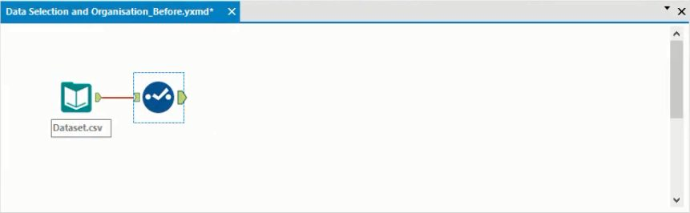
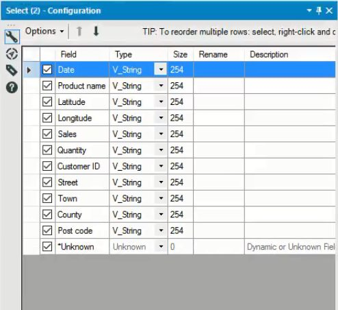
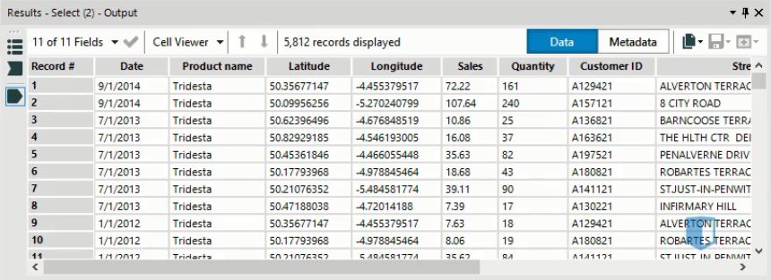
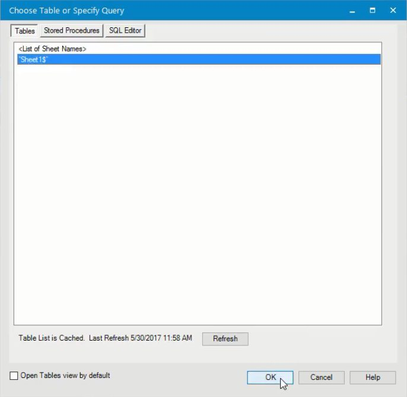
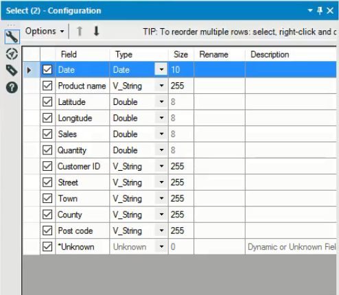
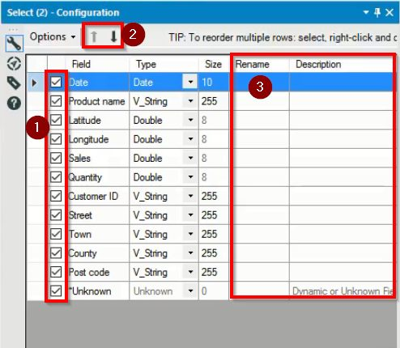

In a previous post, we gave a general guide on how you can import files into Alteryx. In this post, we’ll look specifically at Excel files.
The primary factor that affects the import process is the file type. In this post, we’ll look at two common types for Excel files: csv and xlsx.
Steps for importing CSV files
A csv file is a comma separated values file. Simple tabular data is often saved in a csv format. As a csv file is a text file, it can be opened easily by a wide range of spreadsheet programs or even text editors.
To import any file into Alteryx, we use the Input Data tool, which we discussed in our post on importing data here. In order to understand exactly how the import process works, we can attach a Select tool to the imported dataset. The Select tool is found on the Preparation tab. This creates a canvas that looks like this.

When importing a csv file, the configuration window for this Select tool will look like the image below.

Notice that every field has the same data type, of V_String. The V_String data type should be used to represent strings of text that are of variable length. If we run the workflow, and look at the results window, shown below, we can see this type is not appropriate for every field in the dataset.

Clearly, several of these fields should have different types. For example, the date column should have a Date type, while the columns from Latitude to Quantity should all have numeric data types.
The issue is that Alteryx does not have sufficient information to assign data types when we import a csv file. We can deal with this by changing the types of the fields in the configuration window, but this could be awkward with a large Excel file. Let’s see if the process is any easier with an xlsx file
Steps for importing xlsx files
When we import an Excel file, we must specify the sheet we are connecting to as part of the input data tool, as can be seen below. Otherwise the Input Data tool works exactly as it does for a csv file.

If we add a Select tool to the workflow as before, we will see the configuration window looks like this.

At first, this looks like an improvement on what we had before. The date column now has a date type, while the numeric columns we identified previously now have the numeric type double. However, this is still not perfect.
For example, Alteryx has several different numeric types. The double type represents decimal numbers. In this dataset, the quantity of product sold is a whole number, and would be better represented as an integer data type. This would be make the data model more efficient as integers take up less space than doubles, which can be an important consideration if your data model is large.
Basically, Alteryx can detect that a column is numeric but cannot identify specific numeric types. The same applies for text strings, which are all treated as variable length strings, when a fixed length string might be more appropriate and make the model more efficient. As a result, it’s always a good idea to connect a Select tool when you import Excel data, regardless of the file type.
Making the most of the Select tool
There are several other uses of the Select tool that can be found in the configuration window. We’ll look at the configuration window again below to identify these uses.

The check boxes at the left of the window (1 in the image above) let you remove fields that are not needed. Only fields that are selected are carried forward in the workflow. You can reorder the fields by using the arrows highlighted at 2 above. Alternatively, the options menu provides options to reorder or sort the fields.
Finally, you can rename any of the fields in the dataset or add a description, using the columns highlighted at 3 above. This can be useful if your data comes from a database, as the column names can often be quite unclear. With an Excel file, it’s probably less of an issue, but it’s still worth bearing in mind.
Conclusion
Importing data from an Excel file is not a difficult process. The key issue to be aware of is how the Excel data is saved. A csv file is particularly easy to import, but may require you to adjust the data types of many of the fields in your data. Importing an xlsx file is slightly more difficult, but Alteryx can do a better job of identifying data types from an xlsx file.
Whichever file format you use, it’s always worth using the Select tool to identify whether there are any unneeded columns that can be removed from your data, or if the dataset can be made clearer before you go on to analyze it.